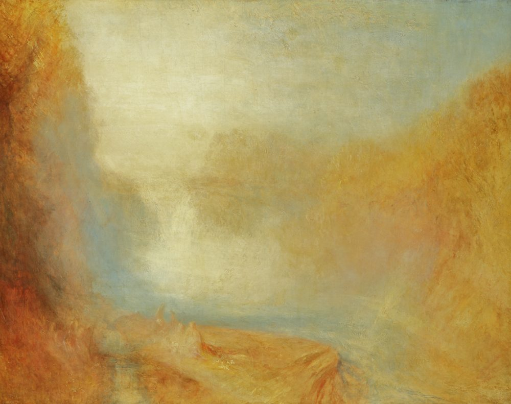

Grand TourSéquences prêtes à l'emploi · Français, anglais · Tous niveaux
Power from the Water: Scotland’s Energy, Yesterday and Tomorrow

Œuvre en domaine public : Joseph Mallord William Turner, The Falls of the Clyde, vers 1845, huile sur toile, Lady Lever Art Gallery, Port Sunlight (National Museums Liverpool), LL 3584. Image : Wikimedia Commons, domaine public.
In Context
Analyse, debate, write
Write an argumentative article on Scotland's energy, yesterday and tomorrow.
Télécharger la séquence, Student version (Arial 16 pt, lisible en Dys-friendly version)
Anglais · Première, lycée général et technologique · Tronc commun, LVA B1+ (LVB : B1, avec les encadrés Help)
Une cascade peinte par Turner, une usine qui tourne grâce à elle, du charbon et du pétrole, puis le vent et la marée : l’Écosse raconte en deux siècles toute l’histoire de l’énergie. Elle pose aussi la question de l’axe 4 : le progrès va-t-il toujours dans le sens du respect de l’être humain et de son environnement ?
Six lessons de 55 minutes, minutées sur 52, et une évaluation au format de l’évaluation ponctuelle de Première, en Teacher version.
Thème
Énergies d’hier et de demain : l’exemple de l’Écosse (objet d’étude de l’axe 4). De la force de l’eau à New Lanark au charbon, au pétrole de la mer du Nord, puis à l’éolien, à l’hydroélectricité et à la marée.
Niveau
Première, lycée général et technologique. CECRL : LVA B1+ (vers B2 en compréhension) ; LVB B1.
Problématique
Can Scotland’s energy story show that progress and responsibility can go together?
Objectifs
Analyser un tableau et un document historique ; comprendre un témoignage oral et un texte statistique ; débattre en nuançant ; rédiger un article argumenté. Langue : used to et would, la concession (although, even though, whereas), le past perfect, les comparatifs nuancés, le conditionnel (If we had…, we would…), les modaux du regret (should have).
Ancrage culturel
Turner et le paysage romantique écossais ; New Lanark (patrimoine mondial de l’UNESCO depuis 2001) et Robert Owen ; le pétrole de la mer du Nord et Aberdeen ; la fin du charbon (Longannet, 2016) ; Whitelee, Cruachan, MeyGen, l’île d’Eigg ; l’objectif de neutralité carbone en 2045.
Axe
Axe principal : axe 4, Innovations scientifiques et responsabilité. Axe secondaire : axe 5, L’être humain et la nature, parce que chaque énergie écossaise (la rivière, le charbon, le vent, la marée) prend sa force dans la nature et oblige à choisir entre l’exploiter et la préserver.
Overview (Teacher version)
Public : Première, lycée général et technologique, Tronc commun (arrêté du 5 mai 2025, BO n° 22 du 29 mai 2025). L’axe 4 est l’axe principal ; l’axe 5 est en appui. La séquence complète la couverture des axes de l’année (le rapport de novembre signale l’axe 4 comme seulement traité en appui).
Language activities : compréhension de l’écrit (lessons 1, 2, 4), compréhension de l’oral (lessons 3 et 5), expression écrite (toutes, et la tâche finale), expression orale en continu et interaction (toutes, débat en lesson 5).
Documents : un tableau en domaine public (Turner), un texte authentique de 1816 (Robert Owen), une phrase statistique officielle du gouvernement écossais (Open Government Licence), des textes d’entraînement écrits pour la classe à partir de faits vérifiés, et deux transcripts à lire en classe.
Chaque lesson suit le même ordre : question du jour, document lu avec la spirale de Gorse, Expanding your vocabulary, Étude de la langue, exercices avec corrigés derrière Show the answer, oral et interaction, trace écrite, homework ; point d’arrêt et Plan B de 8 minutes.
Évaluation en Teacher version : grille de la tâche finale et sujet au format de l’évaluation ponctuelle de Première (1 h 30, compréhension de l’écrit et expression écrite, 10 + 10).
Lessons at a glance
Lesson
Titre
Activités
Étude de la langue
1
The Falls of the Clyde
CE PO PI PE
used to et would (habitudes passées)
2
A Model Village? Robert Owen at New Lanark
CE PO PI PE
la concession : although, even though, whereas, however
3
Black Gold and the End of Coal
CO CE PI PE
le past perfect
4
Wind, Water and Tide
CE PE PO
comparatifs nuancés et passif
5
Who Pays for Tomorrow?
CO PI PO PE
second et third conditional
6
Scotland’s Energy Story: A Model for the World?
PE PO PI CE
révision : organiser un article
If a student cannot attend class or is in hospital
Chaque lesson a son parcours, en bas de la lesson : 30 à 40 minutes, consignes à l’infinitif, une version courte de 15 minutes.
Les réponses s’ouvrent avec « Show the answer », après avoir cherché.
Pour l’oral, s’enregistrer ; pour l’interaction et le débat, écrire les deux rôles et les enregistrer, ou faire l’échange au téléphone avec l’enseignante.
Recopier la trace écrite et envoyer le travail par l’ENT. L’enseignante transmet l’évaluation par l’ENT : la faire sans aide, en 1 h 30, en notant l’heure de début et de fin.
Lesson 1 · The Falls of the Clyde
CEPOPIPE Durée : 55 minutes, minutée sur 52.
By the end of this lesson, I can: describe a Romantic painting, explain how water became energy at New Lanark, and talk about past habits.
Question du jour : Is a waterfall a landscape, or a source of energy?
Document 1 : J. M. W. Turner, The Falls of the Clyde, vers 1845, Lady Lever Art Gallery, domaine public.
Document 2 · Power from the river (training text)
The Falls of Clyde are a series of waterfalls on the River Clyde, near the town of Lanark, in the south of Scotland. In the late eighteenth century, they attracted two kinds of visitors. Poets and painters came to admire the wild water and the mist. Businessmen came to measure it.
From 1785, David Dale and Richard Arkwright built cotton mills at New Lanark, just below the falls, because the river could turn the huge water wheels that drove the spinning machines. By 1799, four mills and housing for about 1,500 people stood in the valley. The mills used to work long hours, and many workers were children.
The mills went on producing cotton until 1968. Today, New Lanark is a World Heritage Site, and a small hydroelectric scheme still uses the River Clyde.
Texte d’entraînement écrit pour la classe, d’après South Lanarkshire Council, New Lanark and Falls of Clyde Conservation Area Appraisal, et New Lanark World Heritage Site.
Spirale de Gorse · The Falls of the Clyde (Turner)
Le premier tour part de ce qui saute aux yeux. À chaque tour, l’idée est à l’extérieur, l’appui dans le document à l’intérieur. Quatre tours, puis la pointe.
Spirale de Gorse, quatre tours puis la pointe. Méthode conçue par Madame Carole Paoli Pompougnac.
Tableau de station
Étape
Question
Réponse
Raisonnement
Acquisition
1 Je remarque (I notice)the whole canvas
What strikes me first?
The painting is almost all light: gold, white and blue mist.
Turner paints the energy of the water as light, not as a precise scene.
Partir de ce qui saute aux yeux.
2 Je repère (I spot)centre and foreground
Which clues? Where exactly?
The falls are in the centre; tiny figures stand by the water.
The human beings are small: nature is stronger.
Relever chaque indice avec sa place dans le document.
3 Je comprends (I understand)edges, sky
What does it show? What effect, what contrast?
Forms dissolve into vapour.
The sublime: nature is beautiful and a little frightening.
Expliquer un effet ou un contraste.
4 J’anticipe (I anticipate)doc 2 and painting
What do I expect? Is it confirmed?
Expected: Turner paints the mills nearby. Not confirmed: he shows only nature.
The painter chooses the wild river; the businessman sees a machine.
Vérifier une hypothèse dans le document.
5 Je trouve le sens (I find the meaning)painting and text
What meaning do I defend, and what is its limit?
The same water is a landscape and a source of power.
Limit: progress used the beauty of the river; can it also protect it?
Relier l’analyse à la problématique.
Phrase d’appui : At first sight, I notice… In the foreground, I spot… This suggests that… Whereas Turner…, the mill owners…
Minutage (52 minutes)
Minutes
Étape
Activité
0 à 5
Question du jour : hypothèses à partir du titre.
PO
5 à 18
Spirale de Gorse sur le tableau.
CE, PO, interaction
18 à 26
Lecture du document 2, questions.
CE
26 à 31
Expanding your vocabulary.
CE
31 à 39
Étude de la langue : used to et would.
PE
39 à 46
Binômes : le poète et l’homme d’affaires devant la cascade.
PI
46 à 50
Lesson summary.
PE
50 à 52
Homework.
Point d’arrêt : minute 46 : chaque élève a décrit le tableau et dit une phrase avec used to.
Plan B (8 minutes) : le tableau projeté ; trois phrases par élève (I notice… The river used to… Today…) ; dictée de la trace écrite.
Expanding your vocabulary
Word
Meaning
Example
a waterfall
water falling from a height
The Falls of Clyde are a series of waterfalls.
mist
tiny drops of water in the air
The mist hides the rocks.
a water wheel
a wheel turned by a river to drive machines
The water wheels drove the spinning machines.
a mill
a factory, often powered by water
Dale built cotton mills at New Lanark.
to harness
to control a natural force to produce energy
They harnessed the river.
the sublime
beauty that is also impressive or frightening
Turner paints the sublime.
a World Heritage Site
a place protected by UNESCO
New Lanark is a World Heritage Site.
Étude de la langue
used to + base verbale : une habitude ou un état passé qui n’existe plus. The mills used to work long hours.
would + base verbale : une action répétée dans le passé, dans un récit (pas pour un état). Every morning, the children would walk to the mill.
Ne pas confondre avec be used to + -ing (être habitué à).
Exercice 1. Réécrire avec used to.
In 1800, many children worked in the mills.
In 1800, many children used to work in the mills.
The river turned the water wheels.
The river used to turn the water wheels.
Visitors came to admire the falls.
Visitors used to come to admire the falls.
Exercice 2. Used to ou would ? Une seule réponse est possible.
There ___ be four mills in the valley. (état)
used to
Every summer, painters ___ set up their easels near the falls. (action répétée)
would (used to est aussi possible)
Compréhension
Exercice 3. Répondre en anglais d’après le document 2.
Who were the two kinds of visitors?
Poets and painters, who came to admire the water, and businessmen, who came to measure it.
Why were the mills built just below the falls?
Because the river could turn the water wheels that drove the spinning machines.
What happened in 1968?
The mills stopped producing cotton.
Oral et interaction
En binôme, deux minutes : A est un poète romantique, B un homme d’affaires de 1785. Chacun dit ce qu’il voit dans la cascade et pourquoi elle compte. L’autre répond avec I see your point, but….
Chaque élève dit une phrase avec used to.
Help : partir des mots du tableau et des couleurs.
Going further : expliquer en trois phrases pourquoi Turner ne peint pas les usines.
Lesson summary
Copy it into your exercise book.
Turner’s The Falls of the Clyde (c. 1845) shows a waterfall dissolved in light and mist: nature is sublime and human beings are small.
From 1785, mills were built at New Lanark to harness the river. The mills used to work long hours. The same water was a landscape for painters and a source of energy for businessmen.
Homework
Écrire 80 mots : la légende du tableau pour une exposition sur l’énergie, avec une phrase avec used to et une avec whereas.
Dys-friendly version
La spirale est faite à l’oral, une ligne à la fois ; seule la colonne « Réponse » est écrite.
Le document 2 est lu paragraphe par paragraphe, avec une question par paragraphe.
Exercice 1 : le début de chaque phrase est donné.
If a student cannot attend class or is in hospital
Observer le tableau et faire la spirale (colonne « Réponse ») (10 min).
Lire le document 2 et faire l’exercice 3 (8 min).
Faire les exercices 1 et 2 (8 min).
S’enregistrer une minute : décrire le tableau, puis dire ce que la rivière est devenue (5 min).
Recopier la trace écrite.
Version courte (15 minutes) : la spirale et l’exercice 3.
À envoyer par l’ENT : la spirale, les exercices, l’enregistrement.
Lesson 2 · A Model Village? Robert Owen at New Lanark
CEPOPIPE Durée : 55 minutes, minutée sur 52.
By the end of this lesson, I can: understand a historical speech, explain what Owen changed, and give a nuanced opinion with concession.
Question du jour : Can a factory owner make the world better?
Document 1 · Robert Owen, Address to the Inhabitants of New Lanark, 1 January 1816 (extract)
“What ideas individuals may attach to the term ‘Millennium’ I know not; but I know that society may be formed so as to exist without crime, without poverty, with health greatly improved, with little, if any, misery, and with intelligence and happiness increased a hundredfold; and no obstacle whatsoever intervenes at this moment except ignorance to prevent such a state of society from becoming universal.”
Texte authentique, domaine public. Discours prononcé à l’ouverture de l’Institute for the Formation of Character, New Lanark, 1816.
Document 2 · Owen’s experiment (training text)
Robert Owen took over the New Lanark mills from his father-in-law, David Dale, in 1799. He believed that people are shaped by their environment. So he opened a school for the workers’ children, and the first infant school in Britain, reduced working hours and stopped employing very young children. The village store sold good food at fair prices, and in the evening adult workers could attend classes and concerts.
Visitors came from all over Europe to see the model village. But Owen also controlled his workers closely. Each worker had a small wooden block, the silent monitor, whose colour showed how well he or she had worked that day, and workers could be fined for drunkenness or for an untidy house.
Texte d’entraînement écrit pour la classe, d’après New Lanark World Heritage Site et l’université de Glasgow.
Spirale de Gorse · le discours de 1816
Le premier tour part de ce qui saute aux yeux. À chaque tour, l’idée est à l’extérieur, l’appui dans le document à l’intérieur. Quatre tours, puis la pointe.
Spirale de Gorse, quatre tours puis la pointe. Méthode conçue par Madame Carole Paoli Pompougnac.
Tableau de station
Étape
Question
Réponse
Raisonnement
Acquisition
1 Je remarque (I notice)first line
What strikes me first?
Owen speaks about a perfect future.
The speech is almost religious: a promise.
Partir de ce qui saute aux yeux.
2 Je repère (I spot)middle
Which clues? Where exactly?
Repetition of “without”: the list of evils disappears.
The rhythm makes the dream sound possible.
Relever chaque indice avec sa place dans le document.
3 Je comprends (I understand)end
What does it show? What effect, what contrast?
Only ignorance stops progress.
For Owen, education is the solution.
Expliquer un effet ou un contraste.
4 J’anticipe (I anticipate)document 2
What do I expect? Is it confirmed?
Expected: an owner wants profit only. Partly confirmed: profit, but also schools.
Industrial progress can serve human beings.
Vérifier une hypothèse dans le document.
5 Je trouve le sens (I find the meaning)document 2, end
What meaning do I defend, and what is its limit?
The silent monitor and fines.
Limit: a generous project can also be a form of control.
Relier l’analyse à la problématique.
Phrase d’appui : Owen claims that… Although he…, he also… This shows that…
Minutage (52 minutes)
Minutes
Étape
Activité
0 à 5
Question du jour.
PO
5 à 17
Lecture du discours, spirale.
CE
17 à 25
Document 2 : pour et contre.
CE
25 à 30
Expanding your vocabulary.
CE
30 à 38
Étude de la langue : la concession.
PE
38 à 46
Débat en binômes : Owen, héros ou patron autoritaire ?
PI
46 à 50
Lesson summary.
PE
50 à 52
Homework.
Point d’arrêt : minute 46 : chaque élève a dit une phrase avec although ou even though.
Plan B (8 minutes) : au tableau, deux colonnes progress / control ; une phrase de concession par élève ; dictée de la trace écrite.
Expanding your vocabulary
Word
Meaning
Example
a speech
a talk given in public
Owen gave a speech in 1816.
poverty
being very poor
He wanted a society without poverty.
ignorance
lack of knowledge
Only ignorance stands in the way.
an infant school
a school for very young children
He opened the first infant school in Britain.
to be shaped by
to be formed by
People are shaped by their environment.
a fine
money paid as a punishment
Workers could pay a fine.
paternalistic
controlling people “for their own good”
Owen was a paternalistic employer.
Étude de la langue
Although / even though + proposition : malgré le fait que. Although Owen improved conditions, he controlled his workers. (even though est plus fort).
whereas oppose deux faits ; however se place en début de phrase, suivi d’une virgule.
Exercice 1. Relier les deux idées avec le mot donné.
Owen reduced working hours. He still made a profit. (although)
Although Owen reduced working hours, he still made a profit.
Visitors admired the village. Some workers felt watched. (whereas)
Visitors admired the village, whereas some workers felt watched.
The school was a great idea. It was also a way to shape workers. (however)
The school was a great idea. However, it was also a way to shape workers.
Compréhension
Exercice 2. Vrai ou faux ? Justifier avec le document.
Owen thought people are born good or bad.
False: he believed people are shaped by their environment.
Owen opened the first infant school in Britain.
True.
Owen never controlled his workers.
False: there was the silent monitor and workers could be fined.
Oral et interaction
Débat en binôme (3 minutes) : A défend Owen (He improved…), B le critique (Even though…, he…). On termine par une phrase commune nuancée.
Chacun dit une phrase sur le lien entre progrès industriel et responsabilité.
Help : utiliser les colonnes progress / control.
Going further : comparer Owen à une entreprise d’aujourd’hui qui affiche une responsabilité sociale, en quatre phrases.
Lesson summary
Copy it into your exercise book.
In 1816, Robert Owen claimed that society could exist “without crime, without poverty”, and that only ignorance stood in the way.
At New Lanark, he opened schools and reduced working hours. Although he improved the workers’ lives, he also controlled them closely: progress and responsibility can go together, but not always freely.
Homework
Écrire 120 mots : Was Robert Owen a hero? avec deux phrases de concession.
Dys-friendly version
Le discours est découpé en quatre morceaux, avec un mot clé souligné par morceau.
Pour le débat, la carte donne trois arguments pour chaque rôle.
Exercice 1 : les mots de liaison sont déjà placés.
If a student cannot attend class or is in hospital
Lire le discours, puis faire la spirale (12 min).
Lire le document 2 et faire l’exercice 2 (8 min).
Faire l’exercice 1 (6 min).
Interaction : écrire les deux rôles (huit répliques) et les enregistrer, ou faire l’échange au téléphone avec l’enseignante. Sujet : Owen, héros ou patron autoritaire ? (8 min)
Recopier la trace écrite.
Version courte (15 minutes) : la spirale et l’exercice 2.
À envoyer par l’ENT : la spirale, les exercices, le débat écrit ou enregistré.
Lesson 3 · Black Gold and the End of Coal
COCEPIPE Durée : 55 minutes, minutée sur 52.
By the end of this lesson, I can: understand a personal testimony, tell a story with the past perfect, and explain what oil changed for Scotland.
Question du jour : Was North Sea oil a gift or a trap?
Document 1 · Morag remembers Aberdeen (1 min 30)
Document audio lu ou diffusé par l’enseignante ; transcript en Teacher version.
Transcript (Teacher version)
My dad had worked in the fishing industry all his life when the first oil arrived. That was in the seventies. BP had found the Forties field in 1970, out in the North Sea, and suddenly Aberdeen was the oil capital of Europe. There were helicopters every morning, new houses, new shops.
My dad got a job offshore. Two weeks on the platform, two weeks at home. It was hard and dangerous, but the money was good. I remember the slogan everywhere: It's Scotland's oil. People thought the oil would make the country rich for ever.
Now my son works offshore too, but on a wind farm. He says the skills are the same: working at sea, in the wind, safely. I'm proud of him. But I know families who lost their jobs when the oil price fell. Oil gave us a lot. I just wish we had thought about tomorrow a bit earlier.
En l’absence d’enregistrement, lire le transcript trois fois, à vitesse naturelle, une minute entre les lectures.
Document 2 · Key dates (training text)
1970: BP discovers the Forties oil field in the North Sea. 1972: the Scottish National Party launches the campaign It’s Scotland’s oil. 1975: the first oil from the Forties field comes ashore.
24 March 2016: Longannet, the last coal-fired power station in Scotland, closes. Scotland no longer produces electricity from coal.
2019: the Scottish Parliament sets a target of net zero greenhouse gas emissions by 2045.
Texte d’entraînement écrit pour la classe à partir de dates vérifiées.
Spirale de Gorse · le témoignage de Morag
Le premier tour part de ce qui saute aux yeux. À chaque tour, l’idée est à l’extérieur, l’appui dans le document à l’intérieur. Quatre tours, puis la pointe.
Spirale de Gorse, quatre tours puis la pointe. Méthode conçue par Madame Carole Paoli Pompougnac.
Tableau de station
Étape
Question
Réponse
Raisonnement
Acquisition
1 Je remarque (I notice)beginning
What strikes me first?
The family moved from fishing to oil.
Energy changed the whole economy of a city.
Partir de ce qui saute aux yeux.
2 Je repère (I spot)first paragraph
Which clues? Where exactly?
Helicopters, houses, shops.
Oil brought fast wealth to Aberdeen.
Relever chaque indice avec sa place dans le document.
3 Je comprends (I understand)second paragraph
What does it show? What effect, what contrast?
A political slogan.
Energy is also a question of power and identity.
Expliquer un effet ou un contraste.
4 J’anticipe (I anticipate)third paragraph
What do I expect? Is it confirmed?
Expected: the son leaves the sea. Not confirmed: he works offshore on wind.
Skills can move from old to new energy.
Vérifier une hypothèse dans le document.
5 Je trouve le sens (I find the meaning)end
What meaning do I defend, and what is its limit?
A regret about the future.
Limit: oil brought wealth, but the transition came late.
Relier l’analyse à la problématique.
Phrase d’appui : Morag explains that… Her father had… She regrets that…
Minutage (52 minutes)
Minutes
Étape
Activité
0 à 4
Question du jour.
PO
4 à 18
Trois écoutes, prise de notes, compte rendu en français, spirale.
CO
18 à 24
Les dates clés.
CE
24 à 29
Expanding your vocabulary.
CE
29 à 37
Étude de la langue : le past perfect.
PE
37 à 46
Interview : un journaliste et Morag.
PI
46 à 50
Lesson summary.
PE
50 à 52
Homework.
Point d’arrêt : minute 46 : chaque binôme a joué l’interview.
Plan B (8 minutes) : une écoute ; trois dates au tableau ; une phrase au past perfect par élève ; dictée de la trace écrite.
Expanding your vocabulary
Word
Meaning
Example
offshore
at sea, away from the coast
He works offshore.
an oil field
an area under the ground or sea with oil
BP found the Forties field.
a platform
a structure at sea to extract oil or gas
Two weeks on the platform.
a power station
a place where electricity is produced
Longannet was a coal-fired power station.
net zero
no more greenhouse gases than can be removed
Scotland aims for net zero by 2045.
a transition
a change from one situation to another
The energy transition came late.
a skill
an ability learnt through practice
The skills are the same.
Étude de la langue
had + participe passé: une action antérieure à une autre action passée. My dad had worked in fishing all his life when the oil arrived.
Regret : I wish we had thought about tomorrow earlier. (wish + past perfect = regret sur le passé).
Exercice 1. Mettre le verbe au past perfect.
When the oil arrived, Morag’s father (work) in fishing for years.
had worked
By 1975, BP (find) the Forties field.
had found
When Longannet closed, Scotland (produce) electricity from coal for over a century.
had produced
Exercice 2. Exprimer un regret avec I wish + past perfect.
We didn’t prepare the transition.
I wish we had prepared the transition.
They didn’t listen to the warnings.
I wish they had listened to the warnings.
Oral et interaction
Interview en binôme (3 minutes) : A est journaliste, B est Morag. Questions : What had your father done before? What changed in Aberdeen? What do you regret? On change de rôle.
Chacun dit une phrase : Oil was a gift because… / a trap because…
Help : la fiche de l’écoute donne les rubriques avant / pendant / après.
Going further : expliquer en quatre phrases pourquoi le slogan It’s Scotland’s oil est politique.
Lesson summary
Copy it into your exercise book.
Morag’s father had worked in fishing before the oil arrived in the 1970s. Aberdeen became the oil capital of Europe.
Longannet, the last coal-fired power station in Scotland, closed in 2016. Today, some offshore skills move to wind farms. Morag says: “I wish we had thought about tomorrow a bit earlier.”
Homework
Écrire 120 mots : le récit d’un habitant d’Aberdeen en 1975, avec deux verbes au past perfect.
Dys-friendly version
La fiche d’écoute donne les dates et les mots clés en gros.
Le transcript est donné après la troisième écoute pour vérifier.
Exercice 1 : le participe passé est donné entre parenthèses.
If a student cannot attend class or is in hospital
Pour l’écoute : demander l’enregistrement à l’enseignante par l’ENT, ou faire lire le transcript deux fois par un proche ; lire le transcript seulement après, pour se corriger. Compte rendu en français : la famille, Aberdeen, le slogan, le fils, le regret (12 min).
Faire la spirale (6 min).
Lire les dates clés et faire les exercices 1 et 2 (8 min).
Interaction : écrire les deux rôles (huit répliques) et les enregistrer, ou faire l’échange au téléphone avec l’enseignante. Sujet : l’interview de Morag (8 min).
Recopier la trace écrite.
Version courte (15 minutes) : l’écoute et l’exercice 1.
À envoyer par l’ENT : le compte rendu, la spirale, les exercices, l’interview.
Lesson 4 · Wind, Water and Tide
CEPEPO Durée : 55 minutes, minutée sur 52.
By the end of this lesson, I can: understand facts and figures about renewable energy, compare them precisely, and describe a project.
Question du jour : Can a small country power itself with nature?
Document 1 · A record year (official statistics)
“In 2022, the equivalent of 113% of Scotland’s gross electricity consumption was generated from renewable sources, an increase of 26 percentage points compared to 2021.”
Scottish Government, Energy Statistics for Scotland, Q3 2023, gov.scot. Contient des informations du secteur public publiées sous Open Government Licence v3.0.
Document 2 · Four places, four energies (training text)
Cruachan, Argyll. Inside a mountain, the “Hollow Mountain” power station was opened by the Queen in 1965. At night, it pumps water up to a reservoir; when demand is high, the water falls back through turbines in a few minutes.
Whitelee, near Glasgow. Opened in 2009, it is the largest onshore wind farm in the United Kingdom, with more than 200 turbines on moorland. Visitors can walk and cycle between them.
The Pentland Firth, between the mainland and Orkney. The MeyGen project put its first tidal turbines under the sea in 2016, where some of the strongest currents in Europe flow twice a day.
The Isle of Eigg. In 2008, this small island, bought by its inhabitants in 1997, switched on its own electricity system, powered by the sun, the wind and small rivers.
Texte d’entraînement écrit pour la classe à partir de faits vérifiés.
Spirale de Gorse · la statistique et les quatre lieux
Le premier tour part de ce qui saute aux yeux. À chaque tour, l’idée est à l’extérieur, l’appui dans le document à l’intérieur. Quatre tours, puis la pointe.
Spirale de Gorse, quatre tours puis la pointe. Méthode conçue par Madame Carole Paoli Pompougnac.
Tableau de station
Étape
Question
Réponse
Raisonnement
Acquisition
1 Je remarque (I notice)document 1
What strikes me first?
Renewables produced more than Scotland used.
A symbolic record: more than 100%.
Partir de ce qui saute aux yeux.
2 Je repère (I spot)document 1
Which clues? Where exactly?
Not all electricity used was renewable at every moment.
The figure is an average: exports and imports exist.
Relever chaque indice avec sa place dans le document.
3 Je comprends (I understand)document 2
What does it show? What effect, what contrast?
Four places, four natural forces.
Scotland uses its geography as a resource.
Expliquer un effet ou un contraste.
4 J’anticipe (I anticipate)document 2, end
What do I expect? Is it confirmed?
Expected: big companies only. Not confirmed: a community project too.
Energy can be shared by a community.
Vérifier une hypothèse dans le document.
5 Je trouve le sens (I find the meaning)both documents
What meaning do I defend, and what is its limit?
Wind, water and tide replace coal and oil.
Limit: turbines change landscapes; responsibility does not stop with renewables.
Relier l’analyse à la problématique.
Phrase d’appui : The figure shows that… Whereas Cruachan…, Eigg… It is far more… than…
Minutage (52 minutes)
Minutes
Étape
Activité
0 à 5
Question du jour.
PO
5 à 12
Document 1 : comprendre une statistique.
CE
12 à 24
Document 2, spirale de Gorse.
CE
24 à 29
Expanding your vocabulary.
CE
29 à 37
Étude de la langue : comparatifs nuancés et passif.
PE
37 à 47
Groupes : présenter un des quatre lieux en une minute.
PO
47 à 50
Lesson summary.
PE
50 à 52
Homework.
Point d’arrêt : minute 47 : chaque groupe a présenté son lieu.
Plan B (8 minutes) : la carte de l’Écosse au tableau, quatre lieux placés, une phrase par élève ; dictée de la trace écrite.
Expanding your vocabulary
Word
Meaning
Example
renewable
that does not run out (wind, water, sun)
Renewable sources generated 113%.
a turbine
a machine turned by wind or water to make electricity
Whitelee has more than 200 turbines.
a reservoir
an artificial lake
Water is pumped up to the reservoir.
tidal
linked to the movement of the sea
MeyGen is a tidal project.
demand
the amount of electricity people need
When demand is high, the water falls.
onshore / offshore
on land / at sea
Whitelee is an onshore wind farm.
a community
the people who live in a place
Eigg is owned by its community.
Étude de la langue
Nuancer une comparaison : far / much / considerably + comparatif; slightly / a bit + comparatif; not nearly as … as; the largest … in the UK.
Le passif présente un fait : The station was opened in 1965. More than 200 turbines have been installed.
Exercice 1. Comparer avec le mot donné.
Whitelee / Cruachan / large (far)
Whitelee is far larger than Cruachan.
Eigg’s system / Whitelee / small (much)
Eigg’s system is much smaller than Whitelee.
tidal energy / wind energy / developed (not nearly as)
Tidal energy is not nearly as developed as wind energy.
Exercice 2. Mettre au passif.
The Queen opened Cruachan in 1965.
Cruachan was opened by the Queen in 1965.
The inhabitants bought the island in 1997.
The island was bought by its inhabitants in 1997.
Compréhension
Exercice 3. Répondre en anglais.
What does 113% mean?
Renewables generated the equivalent of more than all the electricity Scotland consumed in 2022.
How does Cruachan work?
It pumps water up at night and lets it fall through turbines when demand is high.
Why is Eigg special?
It is owned by its inhabitants and has its own renewable electricity system.
Oral et interaction
Par groupes de trois, chaque groupe présente un lieu en une minute (où, quelle énergie, depuis quand, un chiffre, une limite). La classe pose une question par groupe.
Chaque élève dit une comparaison nuancée.
Help : la fiche donne pour chaque lieu : where / energy / date / figure.
Going further : expliquer en quatre phrases pourquoi the equivalent of 113% ne veut pas dire que toute l’électricité était renouvelable.
Lesson summary
Copy it into your exercise book.
In 2022, renewables generated the equivalent of 113% of Scotland’s electricity consumption.
Cruachan (1965) stores water in a mountain; Whitelee (2009) is the largest onshore wind farm in the UK; MeyGen (2016) uses the tide; Eigg (2008) is powered by its community. Nature has become Scotland’s power plant.
Homework
Écrire 120 mots : présenter un des quatre lieux pour un site touristique, avec deux comparatifs nuancés et un passif.
Dys-friendly version
Le document 2 est donné en quatre cartes, une par lieu.
La statistique est expliquée avec un dessin (100 % = ce que l’Écosse consomme).
Exercice 1 : choisir entre deux phrases proposées.
If a student cannot attend class or is in hospital
Lire les deux documents et faire la spirale (12 min).
Faire l’exercice 3 (6 min).
Faire les exercices 1 et 2 (8 min).
S’enregistrer une minute : présenter un des quatre lieux (5 min).
Recopier la trace écrite.
Version courte (15 minutes) : le document 2 et l’exercice 3.
À envoyer par l’ENT : la spirale, les exercices, l’enregistrement.
Lesson 5 · Who Pays for Tomorrow?
COPIPOPE Durée : 55 minutes, minutée sur 52.
By the end of this lesson, I can: understand two opposite points of view and take part in a debate with nuance.
Question du jour : Is green energy always good for people and nature?
Document · Two voices from Scotland (1 min 30)
Document audio lu ou diffusé par l’enseignante ; transcript en Teacher version.
Transcript (Teacher version)
Callum, 19, apprentice in Aberdeen: I'm training as a technician. My uncle worked on oil platforms for thirty years. If they stopped all oil tomorrow, thousands of families here would lose everything. I'm not against wind farms, I'd love to work on one. But the transition has to be fair: train us first, then change.
Isla, 45, hill walker and member of a community trust in the Highlands: I love the hills, and I'm worried when a new wind farm is planned on a peat bog. Peat stores huge amounts of carbon; if you dig it up, you release it. But our village also has its own turbine now, and the money pays for the hall and the bus. So I'm not saying no. I'm saying: think about where, and ask the people who live there.
En l’absence d’enregistrement, lire le transcript trois fois, à vitesse naturelle, une minute entre les lectures.
Spirale de Gorse · les deux voix
Le premier tour part de ce qui saute aux yeux. À chaque tour, l’idée est à l’extérieur, l’appui dans le document à l’intérieur. Quatre tours, puis la pointe.
Spirale de Gorse, quatre tours puis la pointe. Méthode conçue par Madame Carole Paoli Pompougnac.
Tableau de station
Étape
Question
Réponse
Raisonnement
Acquisition
1 Je remarque (I notice)whole audio
What strikes me first?
A young apprentice in Aberdeen, a walker in the Highlands.
The debate is local: jobs and landscapes.
Partir de ce qui saute aux yeux.
2 Je repère (I spot)Callum
Which clues? Where exactly?
Train workers first, then change.
A just transition protects people.
Relever chaque indice avec sa place dans le document.
3 Je comprends (I understand)Isla
What does it show? What effect, what contrast?
Peat stores carbon; digging it releases carbon.
A green project can harm nature if it is badly placed.
Expliquer un effet ou un contraste.
4 J’anticipe (I anticipate)both
What do I expect? Is it confirmed?
Expected: one for, one against. Not confirmed: both say yes, but with conditions.
Responsibility means conditions, not refusal.
Vérifier une hypothèse dans le document.
5 Je trouve le sens (I find the meaning)Isla, end
What meaning do I defend, and what is its limit?
Communities must decide and benefit.
Limit: listening to everyone takes time, and the climate cannot wait.
Étude de la langue : conditionnel (second et third conditional).
PE
31 à 47
Débat organisé en quatre rôles.
PI, PO
47 à 50
Lesson summary.
PE
50 à 52
Homework.
Point d’arrêt : minute 47 : chaque élève a pris la parole dans le débat.
Plan B (8 minutes) : une écoute ; deux colonnes Callum / Isla au tableau ; une phrase conditionnelle par élève ; dictée de la trace écrite.
Débat : quatre rôles (un apprenti d’Aberdeen, une habitante d’un village des Highlands, une élue au Parlement écossais, une militante pour le climat). Le reste de la classe vote à la fin pour la proposition la plus responsable.
Expanding your vocabulary
Word
Meaning
Example
a just transition
a change to clean energy that is fair to workers
The transition has to be fair.
a peat bog
wet land made of old plants that stores carbon
Peat bogs store carbon.
to release
to let something go out
Digging peat releases carbon.
a community trust
a local organisation owned by the inhabitants
The trust owns a turbine.
to benefit
to receive an advantage
The village benefits from the turbine.
to be planned
to be prepared for the future
A wind farm is planned on the hill.
a condition
something that must happen first
Yes, but on one condition.
Étude de la langue
Second conditional (hypothèse) : If they stopped all oil tomorrow, families would lose everything. (If + prétérit, would + base verbale).
Third conditional (regret sur le passé) : If they had trained workers earlier, the transition would have been easier. (If + past perfect, would have + participe passé).
Exercice 1. Compléter au second conditional.
If Scotland (build) more turbines, it (export) more electricity.
built … would export
If the village (not have) its turbine, the bus (stop).
didn’t have … would stop
Exercice 2. Compléter au third conditional.
If they (plan) the transition earlier, fewer people (lose) their jobs.
had planned … would have lost
If the developer (ask) the villagers, they (accept) the project.
had asked … would have accepted
Oral et interaction
Débat (15 minutes) en quatre rôles, puis vote. Chaque intervention commence par une reformulation : If I understand you correctly… I see your point, but….
Le vote se justifie en une phrase.
Help : la carte de rôle donne deux arguments et une question.
Going further : proposer une solution de compromis en quatre phrases avec une concession et un conditionnel.
Lesson summary
Copy it into your exercise book.
Callum wants a fair transition: if oil stopped tomorrow, families would lose everything. Isla accepts wind power, but not on peat bogs, and she wants communities to decide and to benefit.
Responsibility means saying yes with conditions: where, for whom, and when.
Homework
Écrire 150 mots : une lettre à un journal écossais, Green energy: yes, but…, avec un second et un third conditional.
Dys-friendly version
Les deux voix sont données séparément ; une écoute par voix.
La carte de rôle du débat donne les phrases en entier.
Exercice 1 : les verbes sont déjà conjugués, à choisir dans une liste.
If a student cannot attend class or is in hospital
Pour l’écoute : demander l’enregistrement à l’enseignante par l’ENT, ou faire lire le transcript deux fois par un proche ; lire le transcript seulement après, pour se corriger. Compte rendu en français : qui parle, ce que chacun accepte, ce que chacun demande (12 min).
Faire la spirale (6 min).
Faire les exercices 1 et 2 (8 min).
Débat : enregistrer deux minutes en défendant un des quatre rôles, puis deux minutes en répondant au rôle opposé ; ou débattre au téléphone avec l’enseignante (8 min).
Recopier la trace écrite.
Version courte (15 minutes) : l’écoute et l’exercice 1.
À envoyer par l’ENT : le compte rendu, la spirale, les exercices, les enregistrements.
Lesson 6 · Scotland’s Energy Story: A Model for the World?
PEPOPICE Durée : 55 minutes, minutée sur 52.
By the end of this lesson, I can: write a structured article and present a nuanced answer to the question of the sequence.
Question du jour : Can Scotland’s energy story show that progress and responsibility can go together?
Document · The final task
An international student magazine is preparing a special issue: Energy: who gets it right? You write the Scottish article.
Write 250 words (LVB: 180). Use at least three moments of the sequence (the Falls of Clyde and New Lanark, North Sea oil and the end of coal, wind, water and tide, the debate on a fair transition). Give a clear answer, with a concession.
Then, in groups, present your answer orally in three minutes and answer the class’s questions.
Consigne de la tâche finale, écrite pour la classe.
Spirale de Gorse · la consigne de la tâche
Le premier tour part de ce qui saute aux yeux. À chaque tour, l’idée est à l’extérieur, l’appui dans le document à l’intérieur. Quatre tours, puis la pointe.
Spirale de Gorse, quatre tours puis la pointe. Méthode conçue par Madame Carole Paoli Pompougnac.
Tableau de station
Étape
Question
Réponse
Raisonnement
Acquisition
1 Je remarque (I notice)paragraph 1
What strikes me first?
International students will read the article.
Write clearly for readers who do not know Scotland.
Partir de ce qui saute aux yeux.
2 Je repère (I spot)paragraph 2
Which clues? Where exactly?
Past, present and future.
A good answer uses the whole sequence.
Relever chaque indice avec sa place dans le document.
3 Je comprends (I understand)paragraph 2
What does it show? What effect, what contrast?
Yes, but… / No, although…
Nuance is expected at B1+.
Expliquer un effet ou un contraste.
4 J’anticipe (I anticipate)paragraph 3
What do I expect? Is it confirmed?
Expected: reading the article. Not allowed: three minutes, notes only.
Speaking shows that ideas are understood.
Vérifier une hypothèse dans le document.
5 Je trouve le sens (I find the meaning)the question
What meaning do I defend, and what is its limit?
The task answers the problématique.
Limit: one country cannot be a model for everybody.
Relier l’analyse à la problématique.
Phrase d’appui : In my article, I argue that… Although…, … This is why…
Minutage (52 minutes)
Minutes
Étape
Activité
0 à 5
Consigne et critères.
CE
5 à 35
Rédaction de l’article.
PE
35 à 50
Présentations de trois groupes (3 minutes) et questions.
PO, PI
50 à 52
Ramassage.
Point d’arrêt : minute 35 : l’article est écrit ; les présentations continuent à la lesson suivante.
Plan B (8 minutes) : chaque élève lit sa phrase de conclusion ; l’article est terminé à la maison.
Évaluation : grille de la tâche finale et sujet au format de l’évaluation ponctuelle de Première (1 h 30), en Teacher version, plus bas.
Expanding your vocabulary
Word
Meaning
Example
to argue
to give reasons for an opinion
I argue that Scotland is a partial model.
a model
an example to follow
Is Scotland a model for the world?
to some extent
partly
To some extent, Scotland got it right.
a trade-off
a balance between two advantages
There is a trade-off between jobs and climate.
to sum up
to give the main points briefly
To sum up, progress needs rules.
a headline
the title of an article
Choose a strong headline.
to draw a lesson
to learn something from an experience
We can draw a lesson from Eigg.
Étude de la langue
Plan conseillé : un titre ; une introduction (le contexte, la question) ; deux paragraphes (les réussites, les limites), avec une concession ; une conclusion qui répond.
Connecteurs : First of all, Moreover, However, Although, As a result, To sum up.
Reprendre au moins trois points de langue de la séquence (used to, past perfect, comparatif nuancé, conditionnel).
Exercice 1. Proposer un titre et une phrase d’introduction.
Write a headline.
Example: From Water Wheels to Tidal Turbines: Scotland’s Lesson.
Write the first sentence of the introduction.
Example: Two centuries ago, the River Clyde used to turn the wheels of the New Lanark mills; today, the sea itself is turning turbines.
Oral et interaction
Présentation en groupe (3 minutes, sans lire) : la réponse du groupe, deux exemples, une limite. Puis deux minutes de questions de la classe.
Questions possibles : Why do you say it is a model? What would you change? What about the workers?
Help : la fiche donne le plan et une phrase de départ par paragraphe.
Going further : ajouter un paragraphe sur un autre pays anglophone (par exemple l’Irlande ou le Canada) pour comparer.
Lesson summary
Copy it into your exercise book.
Scotland’s energy story: from water wheels (New Lanark) to oil and coal, then to wind, water and tide. Progress and responsibility can go together if the transition is fair and if nature and communities are respected.
Homework
Terminer l’article (version propre). Préparer des notes en mots-clés pour la présentation.
Dys-friendly version
L’article peut faire 180 mots.
Le plan est donné avec une phrase de départ par paragraphe.
La présentation peut s’appuyer sur trois cartes en gros caractères.
If a student cannot attend class or is in hospital
Lire la consigne et faire la spirale (6 min).
Écrire l’article : 250 mots (180 en version courte), avec trois moments de la séquence et une concession (20 min).
S’enregistrer trois minutes au plus, sans lire, pour présenter la réponse (8 min).
Répondre par enregistrement aux questions envoyées par l’enseignante par l’ENT, ou échanger au téléphone.
Version courte (15 minutes) : un article de 120 mots et une présentation d’une minute.
À envoyer par l’ENT : l’article et l’enregistrement. L’enseignante transmet ensuite le sujet d’évaluation de 1 h 30 : le faire sans aide, en notant l’heure de début et de fin.
Évaluation au format de l’évaluation ponctuelle de Première (1 h 30) (Teacher version)
Format de référence (le même que sur la page British Transport: A Long Heritage) : écrit de 1 h 30 ; compréhension de l’écrit sur un ou deux documents (2 300 à 4 000 signes au total), sur 10 points ; expression écrite en anglais, une question au choix parmi deux, sur 10 points. Niveaux : B1 à B2 en LVA, A2 à B1 en LVB.
En contrôle continu, ce sujet sert d’évaluation de fin de séquence ; il peut se faire sur une plage de 1 h 30 ou en deux lessons (CE, puis PE).
Minutes
Étape
Ce que font les élèves
Activité
0 à 5
Consignes
Lecture des consignes et des deux documents.
Lecture
5 à 45
Reading
Compte rendu en français guidé par les questions.
CE
45 à 85
Expression écrite
Une question au choix, 200 à 250 mots (LVB : 150 à 180).
PE
85 à 90
Relecture
Temps, accords, connecteurs, comptage des mots.
Reading (/10)
Document A · The wind at sea (training text)
Off the coast of Aberdeen, eleven giant turbines turn in the grey water. They were installed in 2018, and visitors on the beach often stop to look at them. For some, they are ugly. For others, they are the most hopeful sight of the city.
Aberdeen has always lived from the sea. Fishermen used to leave the harbour every morning. In the 1970s, oil changed everything: helicopters, platforms, high salaries. Today the city faces a new question. The North Sea still produces oil and gas, but less every year, and Scotland has promised to reach net zero by 2045.
Many offshore workers say their skills are ready for wind: working at height, at sea, safely, in bad weather. What they ask for is time and training. “Nobody wants to be the last oil worker,” says a trade unionist. “But nobody wants to be thrown away either.”
The turbines are part of a much bigger change. Hywind Scotland, the first floating wind farm in the world, started producing electricity off Peterhead in 2017, and huge new projects are planned further out at sea, where the wind is stronger and steadier. Ports such as Aberdeen, Montrose and Nigg are being rebuilt to assemble the giant blades and towers.
Not everyone is convinced. Some fishermen say that the turbines and their cables will close fishing grounds that their families have used for generations. Some economists warn that many of the new jobs may be created abroad, in the factories that build the turbines, rather than in Scotland. And when the wind does not blow, the country still needs other sources of electricity, or ways of storing it.
For the young people of Aberdeen, the choice is very real. More and more of them sign up for training in renewable energy. “My grandfather was a fisherman, my father worked on the rigs, and I want to build wind turbines,” says Ellie, eighteen. “It’s the same sea. We just use it differently.”
In the city centre, the change is already visible. Some engineering companies that used to work only for oil and gas now repair wind turbines or design cables for offshore farms, and some of the city’s buses run on hydrogen produced with renewable electricity. “Aberdeen has reinvented itself before,” says a local historian. “It went from fish to oil. It can go from oil to wind.”
Texte d’entraînement écrit pour la classe.
Document B · Official statistics
“In 2022, the equivalent of 113% of Scotland’s gross electricity consumption was generated from renewable sources, an increase of 26 percentage points compared to 2021.”
Scottish Government, Energy Statistics for Scotland, Q3 2023, Open Government Licence v3.0.
Rendre compte en français des deux documents, en suivant les questions (environ 200 mots en tout).
Document A : décrire la scène du début et les deux réactions des passants.
Retracer les trois étapes de l’histoire d’Aberdeen évoquées dans le texte.
Que demandent les travailleurs de l’offshore, et pourquoi pensent-ils être prêts ?
Expliquer la citation du syndicaliste.
Présenter les projets en cours, les réserves exprimées et le point de vue d’Ellie.
Document B : que montre la statistique, et comment éclaire-t-elle le document A ?
Corrigé
Onze éoliennes géantes en mer au large d’Aberdeen, installées en 2018 ; certains les trouvent laides, d’autres y voient le signe le plus porteur d’espoir de la ville.
La pêche (les pêcheurs quittaient le port chaque matin), puis le pétrole dans les années 1970 (hélicoptères, plateformes, hauts salaires), aujourd’hui la transition : moins de pétrole et de gaz chaque année, objectif de neutralité carbone en 2045.
Du temps et de la formation ; leurs compétences (travail en hauteur, en mer, en sécurité, par mauvais temps) servent aussi pour l’éolien.
Personne ne veut être le dernier ouvrier du pétrole, mais personne ne veut être mis au rebut : la transition doit être juste.
Hywind Scotland, premier parc éolien flottant au monde (2017, au large de Peterhead), de grands projets plus loin en mer, des ports reconstruits ; réserves : zones de pêche fermées, emplois créés à l’étranger, intermittence du vent et besoin de stockage ; Ellie, petite-fille de pêcheur et fille d’un ouvrier des plateformes, veut construire des éoliennes : la même mer, utilisée autrement.
En 2022, les renouvelables ont produit l’équivalent de 113 % de la consommation d’électricité écossaise (+ 26 points) : la transition est déjà bien engagée, ce qui rend urgente la question de la reconversion des travailleurs d’Aberdeen.
Expression écrite (/10)
Traiter une question au choix, en anglais. LVA : 200 à 250 mots environ ; LVB : 150 à 180 mots environ (longueurs indicatives de classe).
Question A : You are Callum, 19, an apprentice in Aberdeen. Write a letter to the First Minister of Scotland about the future of your city and your job.
Question B : “Progress is only progress if it respects people and nature.” To what extent does Scotland’s energy story support this statement? Use examples from the sequence.
Éléments de corrigé
Question A : registre de la lettre (Dear First Minister, Yours sincerely), situation personnelle, une demande précise (formation, calendrier), une concession, registre respectueux.
Question B : réponse nuancée (to some extent), au moins deux exemples de la séquence (New Lanark, pétrole, Whitelee, Eigg, tourbières), concession, conclusion.
Dans les deux cas : langue de la séquence, connecteurs, longueur respectée.
Grille de correction
Activité
Points
Ce que l’on attend
CE
10
Les informations principales des deux documents (4) ; les détails et les liens entre documents (3) ; l’implicite : la citation, le sens de la statistique (3).
PE
10
Réalisation de la tâche et pertinence (3) ; cohérence, plan et connecteurs (3) ; correction et richesse de la langue (4).
Réponse claire à la question, trois moments de la séquence, concession, plan, connecteurs, langue de la séquence ; 250 mots (LVB : 180).
Présentation (PO en continu)
6
Sans lecture, réponse nuancée, deux exemples, une limite ; prononciation compréhensible.
Questions (interaction)
4
Comprend, répond, reformule, défend son point de vue.
Sources
Programme de langues vivantes, cycle terminal, arrêté du 5 mai 2025 (BO n° 22 du 29 mai 2025), axe 4, objet d’étude « Énergies d’hier et de demain : l’exemple de l’Écosse ».
J. M. W. Turner, The Falls of the Clyde, vers 1845, Lady Lever Art Gallery, domaine public, Wikimedia Commons.
Robert Owen, Address to the Inhabitants of New Lanark, 1er janvier 1816, domaine public.
South Lanarkshire Council, New Lanark and Falls of Clyde Conservation Area Appraisal; New Lanark World Heritage Site.
Scottish Government, Energy Statistics for Scotland, Q3 2023, gov.scot, Open Government Licence v3.0.